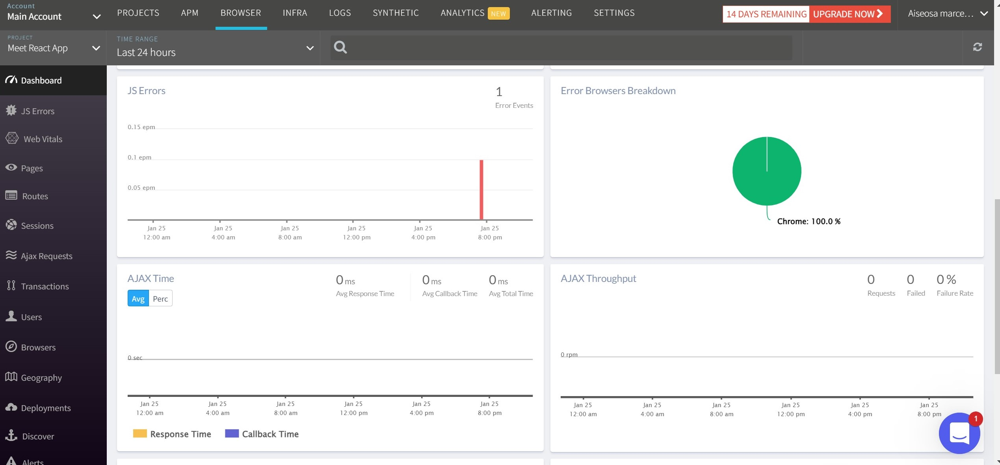

Case Study For Meet App Project
Overview
Meet App is a serverless, progressive web application (PWA) built with React using a test-driven development (TDD) technique. The Meet application uses Google Calendar API to fetch upcoming events. Users of this App will be able to use the application whenever they want to view upcoming events for a specific city and save this event on their Google Calendar
Purpose & Context
Meet App was a personal project I built as part of my web development course at CareerFoundry to demonstrate my skills in building a progressive web application with the ability to work Offline and Online and a serverless backend developed using Test-Driven Development Technique.
Objective
The aim of the project was to have a Web application that is not only a normal web application but also has the benefits of both serverless architecture and Progressive Web Application (PWA). The problem that I wanted to solve in this project is to build an application that Registered Users can use at any time both Online and Offline to view upcoming events for a specific city of choice and also be able to add this event to their Google Calender.
To achieve this, I used the Test-Driven Development approach, where I wrote tests code before writing the actual functionality code for my application to enable me have quality codes and an adequate test coverage.
Approach
Serverless function
I wanted my application to be always available to Registered Users, such that they can access the application both Online and Offline with no cost for idle time. To do so, I created an application with no back-end maintainance by hosting the application via a cloud provider (AWS Lambda). I ensured the lambda functions were adequately tested and I linked the application to Google Calendar to enable it fetch data concerning events in different cities and enable Users add selected events to the Google Calendar.
Next, I wanted to monitor my Application's Performance and behaviour in production mode to enable me pinpoint and actively resolve any issues as soon as they arise. To achieve this, I carried out Application Monitoring using a Full-stack Observability tool called Atatus to help me optimize the application at the right time and to ensure everything works as expected.
Progressive Web Application
I wanted my application to be used on both mobile devices and desktops as well as have a great User experience such as Instant loading, "add to home screen" prompt and cross-platform compatibility. To do so, I made the app a Progressive web Application by hosting it online to make sure it is sharable and installable on any device and responsive so it displays well on any device.

Data Visualization
Next, I wanted Users to easily spot the difference between events, See how many events will take place in a city on upcoming days and visualize the popularity of the event genres. To do so, I created two visually appealing charts using Recharts Library to enable users gain information at a single glance.
A Scatter chart that shows how many events will take place in a specific city in upcoming days and a Pie chart that shows the popularity of each event, with each event represented with a different colour.

Challenges
This was a very interesting project as I got to create an application that I could download both on my mobile and on desktop as well as use the application both offline and online.
However, because this was my first time using AWS services, the project turned out to be difficult. I also encountered a major Cross-Origin Resource Sharing(CORS) issue which made me re-do the project twice. But with the help of my Tutor and after series of pair-programming sessions with my fellow colleagues, I was able to learn in depth about CORS policy and develop a Serverless Progressive Web Application.
Duration
I spent about 3 weeks on the entire project
Credits
Tutor: Andrew Gad
Mentor: Renish Bhaskaran